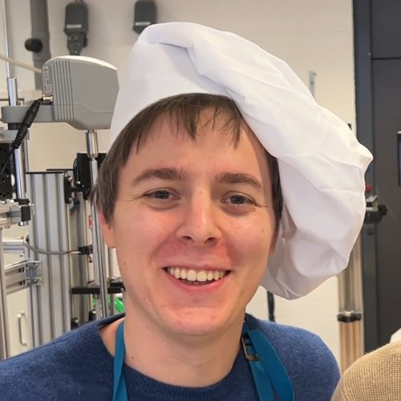
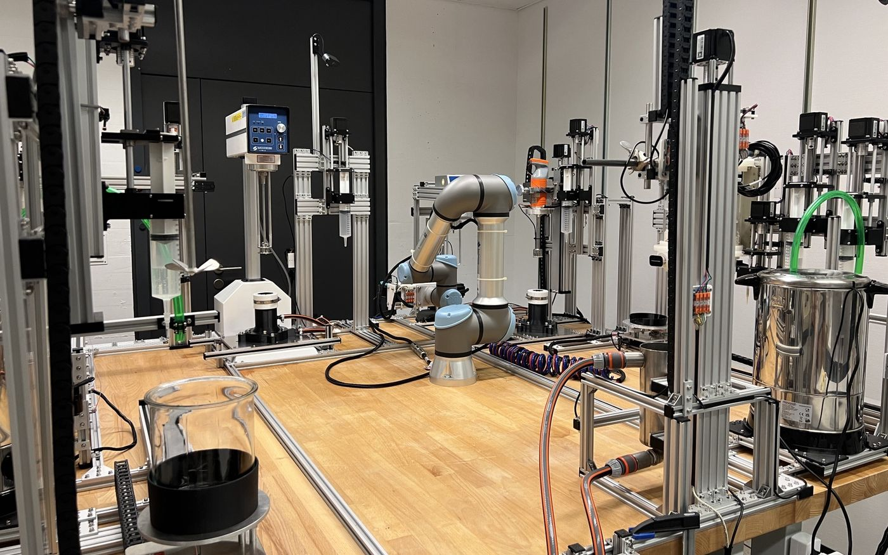
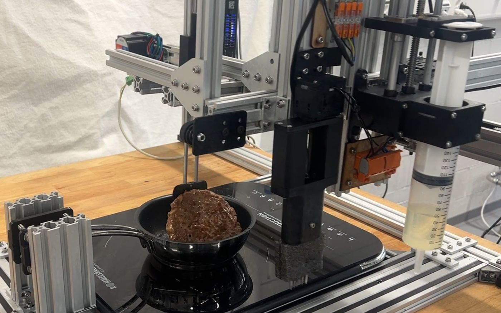
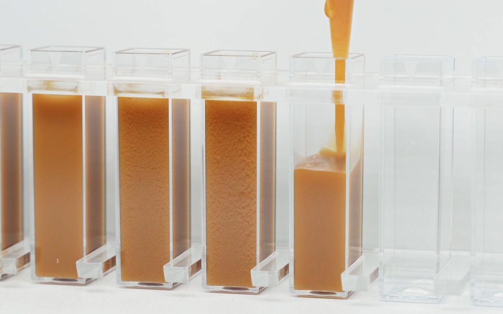

Stefan Ilic
Building robots & AI for food R&D
Launching cookd labs
EPFL × Nestlé R&D
What I'm Building

Robotic and AI Food Lab
Robots that run food science experiments, and AI that learns from them.

Robotic Cooking & Food Modelling
A robot that cooks, measures, and models food properties using AI.

Emulsion Stability Monitoring
Replaced a $120,000 lab instrument with a camera. Deployed at Nestlé R&D.
95% less manual work 8× more trials per day Deployed at Nestlé R&D
EPFL × Nestlé R&D
PhD & Postdoc in Robotics and AI • Lausanne, Switzerland
Building robots that run food science experiments, and AI that learns from them.
Developed 3 robotic platforms during my PhD. One is deployed and in active use at Nestlé R&D today, cutting testing costs by 90%. A second, an LLM-powered cooking robot, got demoed at MARS, Jeff Bezos' invite-only conference. The third is cookd labs.
Academia: 8 papers, a patent, and a teaching excellence award (student vote).
Solfins
Engineering Software Consultant • Belgrade, Serbia
Deploying engineering software and fixing broken workflows.
Deployed 3DExperience, SolidWorks, and PLM systems across 50+ customers, typically making their teams 30% more efficient. Fastest ever in Europe to reach SolidWorks Elite Application Engineer (highest technical award). Employee of the Year in 2020.
Hipac Healthcare
Mechanical Design Engineer (Remote) • Goulburn, Australia
Designed operating table accessories and clinical furniture, fully remote.
100+ products across 10+ product groups, manufacturing-ready. Zero errors.
Aptiv
Car Line Leader, Method Technician • Novi Sad, Serbia
First job. Started as a technician, promoted to Car Line Leader.
Launched the Jaguar E-Pace engine bay wire harness manufacturing line. Ownership of manufacturing process, equipment, quality, and technical documentation. Implemented 20+ engineering changes, saving 4 workers per shift and €30,000+ in equipment costs. Responsible for manufacturing cell and hand-tool design, plant-wide.
University of Kragujevac
B.Sc. & M.Sc. in Mechanical Engineering • Serbia
Bachelor's (9.87/10) and Master's (10.0/10, Best Student Award) in Mechanical Engineering. First place in the Balkan-wide Machine Elements competition, two years in a row.